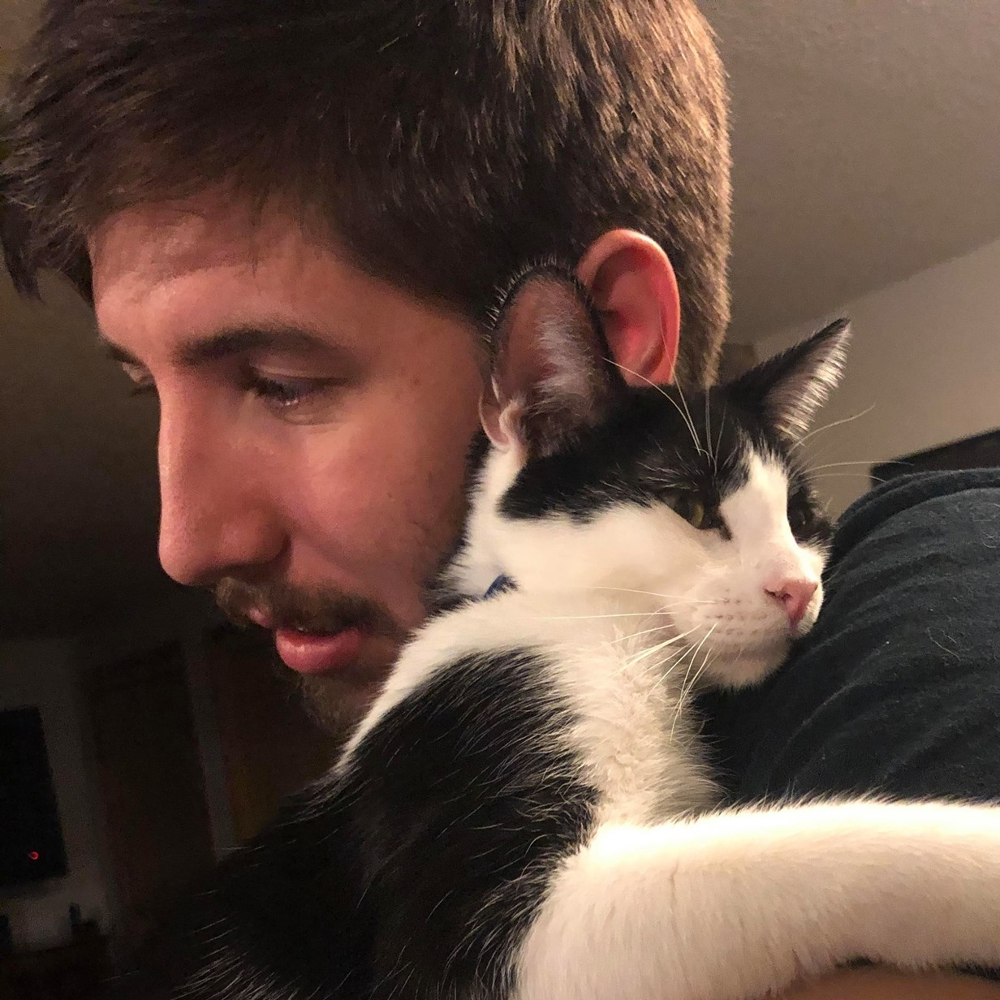

Lane Thompson

I am a senior in computer science at Oregon State University. My focus
has been in simulation with an interest in AR. I switched to a CS major
from mechanical engineering in 2018 after 3 years in college. While I
had a lot of fun studying as an ME, none of the work seemed entertaining
enough to start a career in, so I switched.
My life interests are soccer, gaming, and music, typically in
order. I spent 13 years of my child hood playing soccer and then spent
my first two years of college playing on the men's soccer team of
Southwestern Oregon Community College. I still play with the Oregon
State club team and I may try going semi pro after graduating.
As for music, I am part of a local Blues/Funk fusion band
called Church Ladies. We are currently a 6-piece in which I play
baritone saxophone. We somewhat regularly play local bars and once we
played a small festival.
Finally, my last hobby is videogames. Videogames have and
always will be a great love of mine, and what made me decide to pick
CS when I wanted a change in major. I believe videogames both as
recreation and as an art form are amazing, and I can't see how
videogames evolve in the coming years.